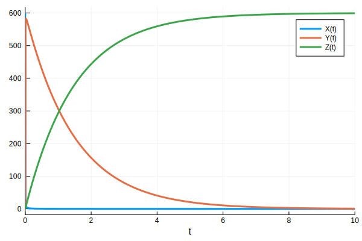
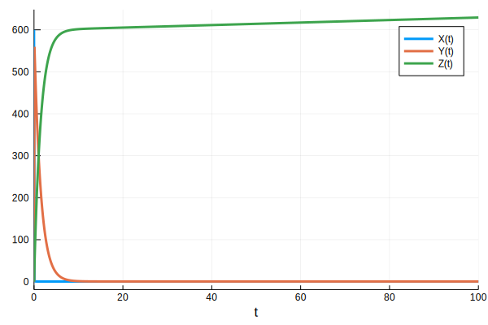
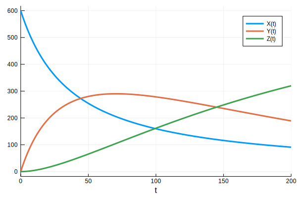
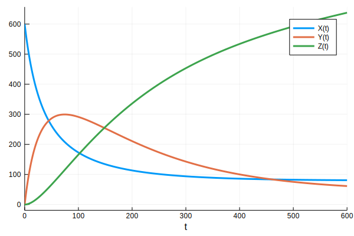

Environmental Model
An important goal of our project is to determine whether the Linuron concentration in the vicinity of the root nodule is significant enough to damage the Rhizosphere and inhibit nodule growth as plants continue to develop.
In order to model this, we introduce a diffusion-reaction-advection model, which is standard in environmental engineering. A byproduct of this model is that we are able to develop heuristics for the magnitude of Linuron and 3,4-DCA runoff. The model is derived from a similar model by Owsianiak et al [1] for Linuron degradation in bioaugmentation beads. Since this paper also modelled Variovorax sp. [4], we were able to obtain many of our parameters from this work of Owsiniak et al.
Introducing the Model
For completeness, we introduce this model from the ground up. First, we model diffusion through the soil with Fick's Laws of diffusion.
$$ C = [\textrm{Linuron}] $$
$$ D = \textrm{diag}(D_x,D_y,D_z) $$
$$ \nabla\cdot(D\nabla C) = \frac{\partial C}{\partial t} $$
The matrix D is called the diffusion matrix, which determines the speed of diffusion in different directions. Next, we add an advection term to model the transport of Linuron by water.
$$ \nabla \cdot (D\nabla C) - \vec{v}_e \cdot \nabla C = \frac{\partial C}{\partial t}$$
This advection term relies on the hydraulic head, which in our case is a measure of water pressure in the soil. However, water tends to flow around the root nodules, so Linuron transport is diffusion-dominated inside the nodule. Therefore we must use the Navier-Stokes equation in order to find the advection velocity. In order to model degradation, we couple this with our kinetic model to derive this coupled system of PDEs:
$$ \nabla \cdot (D\nabla C) - \vec{v}_e \cdot \nabla C = \frac{\partial C}{\partial t} + \chi_n \frac{V_{max}C}{K_m-C} $$
$$ \varrho \left( \frac{\partial v_e}{\partial t} - v_e \cdot \nabla v_e \right) = \nabla \cdot \sigma(v_e,p)+f $$ $$ \nabla \cdot v_e = 0 $$
Assumptions
In the above model, we assumed an averaged rate of water intake - by necessity due to the complexity of the more realistic rain models. This assumption should produce a reasonable approximation since our timescale is on the order of weeks to months, whereas the rate of rainfall is on the order of days.
We also needed to verify that the rate of water transport into the nodule tissue is not limited by physiological factors such as membrane transport. In order to do this, we used the Octanol-Water partition coefficient in order to predict the rate of membrane transport using Overton's Rule [2]:
$$ P=\frac{K_{ow}D}{\ell} $$
By computing the rate of membrane transport, we concluded that the transport of Linuron into plant cells is not membrane-transport limited. In addition, we assume that the background degradation of Linuron by the same pathway is negligible compared to degradation by Variovorax sp. as found by Owsiniak et al..
Numerical Methods
In order to solve this model we first convert the system into its variational form. The Navier-Stokes terms are solved by a midpoint discretization method called Chorin's Method, while the remainder is solved using the backwards Euler method. The following equations are obtained by integrating the above PDEs and applying integration by parts:
$$\int_\Omega \frac{\partial C}{\partial t} w d\tau = \int_\Omega \left[\nabla \cdot (D \nabla C)w - w v_e\cdot \nabla C - \frac{V_{max}C}{K_m-C}\right] d \tau =$$
$$\int_\Omega \left[(-\nabla C)^T D^T \nabla w -wv_e\cdot \nabla C - \frac{V_{max}C}{K_m-C}\right] d \tau + \int_{\partial \Omega} w( \nabla C)\cdot d \vec{s}$$
We now solve this system in Python using a library known as FeNiCS [3], which is an free, open-source library for solving PDEs with Finite Element Methods. Teams interested in using PDE solvers for their iGEM modelling should consider using FeNiCS as a great alternative to expensive proprietary software. Using ParaView, we export animations of our data from FeNiCS. We also used the Python library meshio to convert meshes generated by Gmsh into a format compatible with FeNiCS. As a note to future iGEM teams considering PDE transport models, your discretization must meet the Courant-Freidrichs-Lewy (CFL) condition in order to be stable.
LibA-NAT1 Pathway
We were initially considering three enzymes for Linuron degradation into 3,4-DCA: LibA, PuhA, PuhB, and 2 enzymes for 3,4-DCA degradation: NAT1, NAT2. From preliminary kinetic models, we determined that the use of NAT2 would result in an accumulation of 3,4-DCA that would almost certainly be toxic, and that a PuhA-NAT1 system would not degrade Linuron into 3,4-DCAA at a rate fast enough to mitigate the toxicity of Linuron. The dynamics of the PuhB-NAT1 and LibA-NAT1 systems under fs our preliminary models were identical, and the LibA-NAT1 system was chosen. LibA facilitates the degradation of Liunuron into 3,4-DCA through the following reaction:
$$\text{H}_2\text{O} + \text{Linuron} \longrightarrow \text{N,O-dimethylhydroxylamine} + \text{CO}_2 + \text{3,4-dichloroaniline.}$$ It is known that purified LibA is a monomeric linuron hydrolase of ∼55 kDa with a Km and a Vmax for linuron of 5.8 μM and 0.16 nmol per minute forThe second step in the reaction involving NAT1 is characterized in Rodrigues-Lima [5]. The rate for 3,4-dichloroaniline degradation with NAT1 is determined to be 68 ± 8 nmol. per min. per mg. of enzyme.
We assume that the LibA concentration and the NAT1 concentration are equal since they are placed under the same promoter in our system. This choice was done strictly due to time constraints, and our models did suggest that placing LibA and NAT1 under different promoters would result in a more effective system. In order to mitigate the inaccuracy of using just a Km valu without regard to the enzyme concentation, we decided to use the Kcat from PuhB since its structure and function is very similar to NAT1.
Computations
We use Julia and the DiffEqBiological.jl package in order to determine the dynamics of our reaction network. Under standard assumptions in biochemical modelling, we reduce our model to the following set of equations for our system with no influx of Linuron:
$$\frac{d[\text{Linuron}]}{dt} = - \frac{V_\max^{\text{Lin}} \cdot [\text{Linuron}]}{K_m^{\text{Lin}} + [\text{Linuron}]} [\text{Linuron}],$$ $$\frac{d[\text{3,4-DCA}]}{dt} = - \frac{V_\max^{\text{DCA}} \cdot [\text{3,4-DCA}]}{K_m^{\text{DCA}} + [\text{3,4-DCA}]} [\text{3,4-DCA}] - k_{\text{DCA}}[\text{3,4-DCA}],$$ $$\frac{d[\text{DCAA}]}{dt} = k_{\text{DCAA}}[\text{DCAA}],$$where DCAA is dichloroacetanilide, which is what NAT1 degrades 3,4-DCA into. In the case of with influx, the only difference is an influx term in the first equation. With a reasonable enzyme concentration of LibA and NAT1, as well as 600 nmol of Linuron, we see that

where $X$ is the Linuron concentration, $Y$ is the 3,4-DCA concentration, and $Z$ is the 3,4-DCAA concentration.
Under a high influx of Linuron, we see that

which implies that LibA can mitigate the detrimental effects of high concentrations of Linuron in the soil, but there is a predicted very large accumulation of 3,4-DCA which is known to be detrimental to the cell. However, if we place LibA and NAT1 under different promoters, we see that the behaviour changes drastically if the NAT1 concentration is assumed to be 3 orders of magnitude higher than the concentration of LibA without influx:
and with influx:

Conclusions
Under reasonable amounts of uncertainty in our model, the dynamics of our system were not drastically different. From our model, we determined that in order to engineer a system for the real world, we would need to place LibA and NAT1 under different promoters, ideally with NAT1 under a relatively strong promoter when compared to LibA. In addition, we can conclude that the LibA-NAT1 system could be engineered to degrade Linuron into 3,4-dichloroacetanilide under a wide range of thresholds for toxic concentrations of Linuron and 3,4-DCA. Under the above assumptions of our system, we have demonstrated that a LibA-NAT1 system can efficiently and effectively reduce Linuron concentration in the soil while preserving the rhizosphere.
References
- [1] Owsianiak, M., Dechesne, A., Binning, P. J., Chambon, J. C., Sørensen, S. R., & Smets, B. F. (2010). Evaluation of Bioaugmentation with Entrapped Degrading Cells as a Soil Remediation Technology. Environmental Science & Technology, 44(19), 7622–7627. doi: 10.1021/es101160u
- [2] Grime, J. M. A., Edwards, M. A., Rudd, N. C., & Unwin, P. R. (2008). Quantitative visualization of passive transport across bilayer lipid membranes. Proceedings of the National Academy of Sciences, 105(38), 14277–14282. doi: 10.1073/pnas.0803720105
- [3] Zakharov, P. E. (2018). The FEniCS project. Spark. doi: 10.1515/spark.18.13
- [4] Bers, K., Leroy, B., Breugelmans, P., Albers, P., Lavigne, R., Sørensen, S. R., ... Springael, D. (2011). A Novel Hydrolase Identified by Genomic-Proteomic Analysis of Phenylurea Herbicide Mineralization by Variovorax sp. Strain SRS16. Applied and Environmental Microbiology, 77(24), 8754–8764. doi: 10.1128/aem.06162-11
- [5] Rodrigues-Lima, Fernando & Dairou, Julien & Diaz, Clara & Rubio, Maria & Sim, Edith & Spaink, Herman & Dupret, Jean-Marie. (2006). Cloning, functional expression and characterization of Mesorhizobium loti arylamine N-acetyltransferases: Rhizobial symbiosis supplies leguminous plants with the xenobiotic N-acetylation pathway. Molecular microbiology. 60. 505-12. 10.1111/j.1365-2958.2006.05114.x.